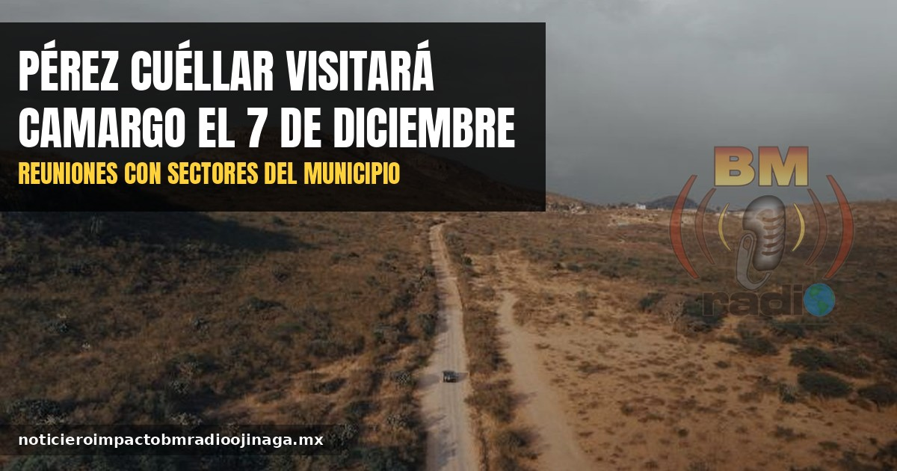
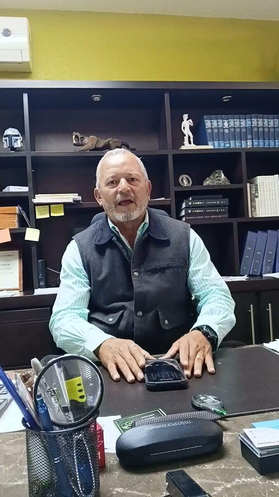
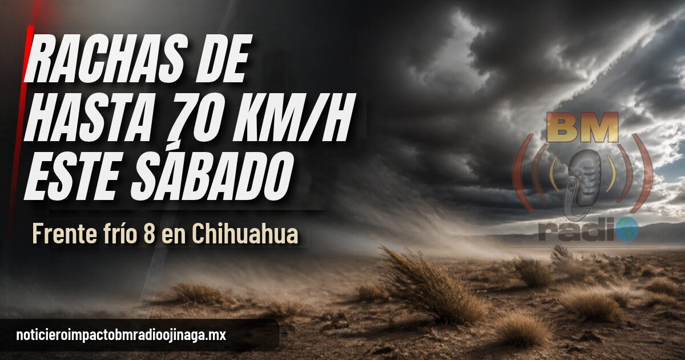

Policiaca
Esta noche se registró una fuerte presencia de unidades de la Policía Ministerial en Aldama. Según medios locales, los agentes acudieron a la colonia Granjas La Abundancia tras recibir reportes de civiles armados, pero no los localizaron. Las unidades continúan con recorridos en distintos sectores de la ciudad. Hasta el momento no se reportan detenidos ni personas lesionadas.
Frontera
Más de 200 propietarios de tierras a lo largo del Río Bravo, entre ellos vecinos de Redford, en el condado de Presidio, se niegan a firmar o dar acceso a sus terrenos para el muro fronterizo. Recibieron cartas de la Patrulla Fronteriza (CBP) y del Departamento de Justicia que les advierten de demandas en un plazo de 90 días. Según reportes periodísticos, en el condado de Presidio se planean barreras secundarias en un tramo de unas 70 millas.

Estatal
Cruz Pérez Cuéllar, coordinador estatal de la Defensa de la Transformación en Chihuahua, estará en Camargo el próximo 7 de diciembre. Así lo anunció Adolfo “Fito” Trillo Herrera. Durante la visita se reunirá con distintos sectores del municipio y dará entrevistas a medios. Trillo aseguró que en Camargo “lo vamos a recibir como siempre”.
Policiaca
El secretario de Seguridad Pública Estatal, Luis Aguirre Rodríguez, informó que en el corredor Aldama-Ojinaga hay alrededor de mil 500 elementos de seguridad: cerca de 900 militares de la Defensa y unos 600 agentes de la Policía Estatal. También participan la Guardia Nacional y la Agencia Estatal de Investigación, con énfasis en la zona rural de Coyame del Sotol. Según el funcionario, se refuerzan las carreteras y los caminos rurales que conectan Aldama con Ojinaga, y hay sobrevuelos con helicópteros de la Policía Estatal. En lo que va del mes se han desarticulado dos células de un grupo delictivo, se rescató con vida a una persona y se aseguraron explosivos.
Frontera
El Distrito de Desarrollo Municipal de Presidio cerró su demanda contra el Departamento de Seguridad Nacional por el muro fronterizo que se planea junto a los diques de la ciudad. Con el acuerdo, presentado el jueves ante un tribunal federal, el gobierno se compromete a no reemplazar el muro del dique ni a excavar o retirar partes de los cerca de 19 kilómetros de diques que protegen a Presidio de inundaciones. La Patrulla Fronteriza (CBP) se reunirá con autoridades locales para explicar cómo será la construcción, cuyo diseño aún no se da a conocer.
Policiaca
Cuatro personas fueron detenidas en la carretera 67, en el condado de Presidio, Texas, por un presunto intento de tráfico de personas. Según la Oficina del Sheriff del Condado de Presidio, agentes de la Patrulla Fronteriza detuvieron un vehículo en el que viajaban tres personas indocumentadas, conducido por un ciudadano estadounidense, con apoyo de los deputies del sheriff. Los cuatro quedaron a cargo de la Patrulla Fronteriza y el sheriff aseguró el vehículo para la investigación.
Nacional
El presidente de Estados Unidos, Donald Trump, afirmó este viernes en la Casa Blanca que le dijo a la presidenta Claudia Sheinbaum que “los cárteles están gobernando México” y que su gobierno no puede permitirlo porque “es nuestro vecino”. Lo dijo al hablar de la reunión que ambos tuvieron en la cumbre de APEC, en China. Trump también aseguró que los dos países están cerca de un acuerdo comercial, aunque insistió en que no permitirá que México mantenga un superávit con Estados Unidos. Por su parte, Sheinbaum dijo que en la reunión hablaron solo de comercio y que volverán a verse para tratar de cerrar el acuerdo, que según medios nacionales podría firmarse en diciembre.
Local
Este viernes 20 de noviembre se realizó en Ojinaga el desfile cívico deportivo por el 116 aniversario del inicio de la Revolución Mexicana. Participaron escuelas de todos los niveles con bailables, tablas rítmicas y carros alegóricos, además de grupos deportivos y elementos del Ejército Mexicano. Familias enteras salieron a las calles del centro para ver pasar a los contingentes, en una mañana soleada.
Local
En este video, el ingeniero César Hernández Padilla, director de Ejecución y Cobranza, informa que los comerciantes han cumplido con sus pagos por la recolección de basura. Mira el video completo en Facebook.
Estatal
El Gobierno del Estado, a través de la Secretaría de Educación y Deporte y el Ichife, entregará en los próximos días 1,250 calefactores a escuelas de 51 municipios, como parte de la campaña “Juntos sin frío en mi escuela”. Serán 1,000 de gas y 250 de leña, con una inversión de 4.6 millones de pesos. Se beneficiará a cerca de 59 mil alumnos, maestros y personal administrativo.
Estatal
La síndica de Hidalgo del Parral, Dalila Villalobos Villalobos, y el regidor de Gobernación, Vicencio Chávez Lazcano, dejaron el PRI y se sumaron al proyecto de Cruz Pérez Cuéllar, alcalde con licencia de Ciudad Juárez y coordinador estatal de la Defensa de la Transformación en Chihuahua. Villalobos dijo que el PRI dejó de atender las causas sociales, y Chávez afirmó que ese partido se alejó de sus principios. Pérez Cuéllar acompañó a Chávez en su segundo informe de actividades. Ahí señaló que rendir cuentas es una obligación de quienes ocupan un cargo público y ayuda a fortalecer la confianza de la ciudadanía.
Local
En este video, el profesor José Jesús García Ontiveros, síndico municipal de Ojinaga, habla del acompañamiento en los eventos por el aniversario de la Revolución Mexicana. Mira el video completo en Facebook.

Frontera
En este video, el licenciado Severo Santiago Baeza, agente aduanal en Ojinaga, habla de las reuniones con el administrador de la aduana. Mira el video completo en Facebook.
Frontera
Del 25 de noviembre de 2026 al 8 de enero de 2027 estará vigente el operativo de invierno Héroes Paisanos, para quienes vienen de Estados Unidos a pasar las fiestas en México. Además de su equipaje, cada persona puede traer mercancía por hasta 500 dólares sin pagar impuestos. Quienes viajen al interior con placas extranjeras deben tramitar su permiso de importación temporal del vehículo. Se espera más movimiento en el puente Ojinaga-Presidio desde el Día de Acción de Gracias, el jueves 26.
Nacional
La presidenta Claudia Sheinbaum se reunió unos 20 minutos con Donald Trump en la cumbre de APEC, en China. Al salir dijo que las negociaciones comerciales van “muy avanzadas”. Las pláticas buscan reducir los aranceles a productos mexicanos. Trump había amenazado con subirlos si México no detiene las caravanas migrantes. Ambos acordaron volver a reunirse en la cumbre del G20, y en enero Estados Unidos iniciará las consultas para revisar el T-MEC.

Estatal
El frente frío número 8 entrará a Chihuahua este fin de semana. Según el Servicio Meteorológico Nacional, el sábado 21 habrá vientos de 30 a 40 km/h con rachas de 50 a 70 km/h en el estado, además de posibles lluvias aisladas. De sábado a martes se esperan mínimas de -5 a 0 grados en las zonas serranas, sobre todo en la madrugada. Se recomienda abrigarse, proteger a niños, adultos mayores y mascotas, y tener cuidado al manejar con viento fuerte.
Policiaca
Gilberto Loya Chávez, encargado de despacho de la Fiscalía General del Estado, informó que se intensificaron los operativos coordinados en Aldama, Ojinaga y Coyame tras los daños reportados en ranchos de la zona. Señaló que los grupos delictivos se han movido de las carreteras hacia brechas y ranchos, y que las autoridades no esperarán denuncias formales para intervenir. Según la Secretaría de Seguridad Pública del Estado, del 1 de enero al 15 de noviembre se han realizado 17 operativos en la región de Aldama, Coyame y Manuel Benavides. En ellos se ha detenido a 40 personas y se han asegurado 35 armas de fuego, 5 mil 500 cartuchos y 12 artefactos explosivos para drones. En las acciones participan la Agencia Estatal de Investigación, la Policía Estatal, la Defensa y la Guardia Nacional. La Fiscalía pidió a la ciudadanía reportar cualquier hecho delictivo.
Local
Este viernes 20 de noviembre se realizará el desfile cívico deportivo por el aniversario de la Revolución Mexicana. Iniciará a las 8 de la mañana en el Parque Manuel Ojinaga, en las calles Juárez y Bolívar. Pasará por la dulcería La Joya, la Presidencia Municipal, la gasolinera Leyva y Alsuper, y terminará en la avenida Trasviña y Retes y calle Quinta (Luz María Aguilar), frente a Alsuper. Se recomienda tomar precauciones y buscar rutas alternas durante el recorrido.
Frontera
La gobernadora electa de Texas, Gina Hinojosa, se reunió en Austin con los 16 sheriffs de los condados de la frontera con México, entre ellos Danny Domínguez, del Condado de Presidio. Hablaron de la situación de sus comunidades y de los recursos que necesitan para la seguridad. Hinojosa aseguró que la frontera seguirá segura bajo su gobierno y prometió apoyo a los sheriffs. No se anunciaron montos ni acuerdos específicos.